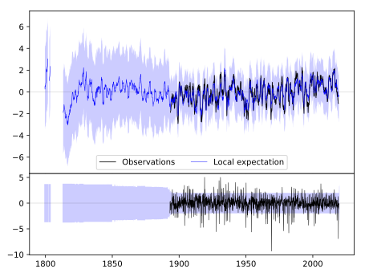
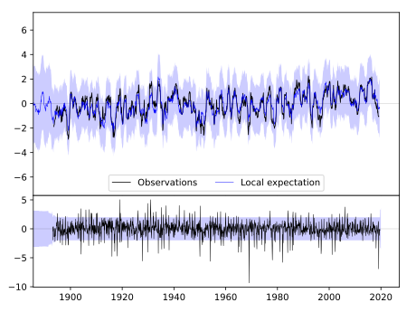
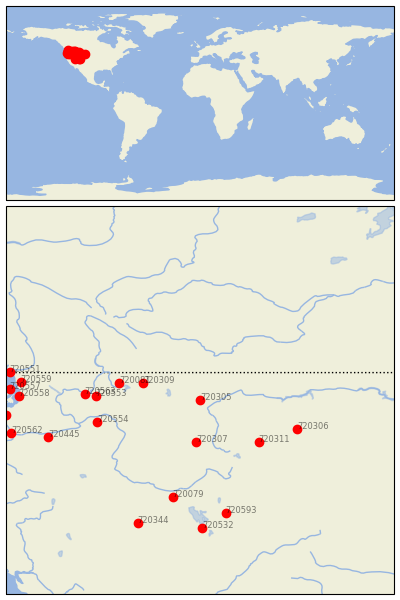

AUGUSTA [USA]


| Neighbour | Name | Country | Distance | Lon/Lat | Years |
|---|
| 720305 | AUGUSTA | USA | 3 | -112.4, 47.5 | 1893-2019 |
| 720309 | LIBBY 1 NE RS | USA | 251 | -115.5, 48.4 | 1893-2019 |
| 720307 | DILLON WMCE | USA | 256 | -112.6, 45.2 | 1893-2019 |
| 720081 | PRIEST RIVER EXP STN | USA | 342 | -116.8, 48.4 | 1893-2019 |
| 720311 | RED LODGE | USA | 354 | -109.2, 45.2 | 1895-2019 |
| 720553 | DAVENPORT | USA | 427 | -118.1, 47.7 | 1892-2019 |
| 720306 | HYSHAM 25 SSE | USA | 441 | -107.1, 45.9 | 1892-2019 |
| 720554 | DAYTON 1 WSW | USA | 445 | -118.0, 46.3 | 1891-2019 |
| 720563 | WILBUR | USA | 472 | -118.7, 47.8 | 1892-2019 |
| 720079 | OAKLEY | USA | 601 | -113.9, 42.2 | 1893-2019 |
| 720445 | MORO | USA | 672 | -120.7, 45.5 | 1893-2019 |
| 720593 | EVANSTON 1 E | USA | 698 | -111.0, 41.3 | 1889-2019 |
| 720559 | SEDRO WOOLLEY | USA | 737 | -122.2, 48.5 | 1881-2019 |
| 720558 | SEATTLE URBAN SITE | USA | 742 | -122.3, 47.7 | 1894-2019 |
| 720532 | TOOELE | USA | 778 | -112.3, 40.5 | 1895-2019 |
| 720557 | PORT TOWNSEND | USA | 779 | -122.8, 48.1 | 1859-2019 |
| 720551 | BLAINE | USA | 787 | -122.8, 49.0 | 1879-2019 |
| 720344 | ELKO RGNL AP | USA | 792 | -115.8, 40.8 | 1888-2019 |
| 720552 | CENTRALIA | USA | 806 | -123.0, 46.7 | 1892-2019 |
| 720562 | VANCOUVER 4 NNE | USA | 811 | -122.7, 45.7 | 1849-2019 |